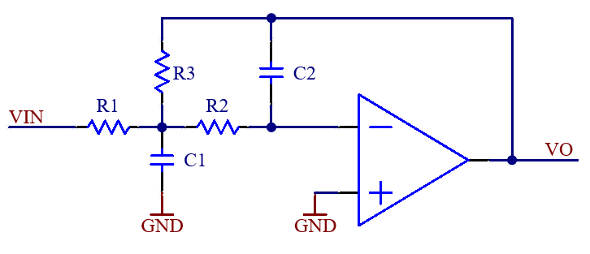

Second Order Low Pass Butterworth Op-Amp Filter
From Basic Engineering Circuit Analysis, 9th ed. p643 by J. David Irwin and R. Mark Nelms
Transfer function of a second order low pass active filter (general form):
$$H(s)=\frac{H_0 \omega_c^2}{s^2+2\zeta\omega_cs+\omega_c^2}$$H0 is the DC gain
ωc is the ? [rad/s]
ζ is the damping ratio
A circuit with this transfer function is:
 $$H(s)=\frac{V_O(s)}{V_{IN}(s)}=\frac{-(\frac{R_3}{R_1})(\frac{1}{R_3 R_2 C_1 C_2})}{s^2+s(\frac{1}{R_1 C_1}+\frac{1}{R_2 C_1}+\frac{1}{R_3 C_1})+\frac{1}{R_3 R_2 C_1 C_2}}$$Comparing the previous 2 equations:
$$\omega_c = \frac{1}{\sqrt{R_3 R_2 C_1 C_2}}$$ $$\zeta = \frac{1}{2} \sqrt{\frac{C_2}{C_1}}(\frac{1}{R_1}+\frac{1}{R_2}+\frac{1}{R_3})\sqrt{R_2 R_3}$$ $$H_0=-\frac{R_3}{R_1}$$
Section 12.4: Scaling (p. 629-630)
Used to adjust values of filter components of the cutoff frequency
Prime values are old values
Magnitude Scaling
resonant frequency, quality factor (and therefore bandwidth) are unaffected
Frequency Scaling
Resonant frequency and bandwidth are affected
| Filter Order | Butterworth Polynomial Factors |
|---|---|
| 1 | (s+1) |
| 2 | (s2+1.414s+1) |
| 3 | (s+1)(s2+s+1) |
| 4 | (s2+1.848s+1)(s2+0.7654s+1) |
| 5 | (s+1)(s2+1.618s+1)(s2+0.6180s+1) |
| 6 | (s2+1.932s+1)(s2+1.414s+1)(s2+0.5176s+1) |
| 7 | (s+1)(s2+1.802s+1)(s2+1.247s+1)(s2+0.4450s+1) |
| 8 | (s2+1.962s+1)(s2+1.663s+1)(s2+1.111s+1)(s2+0.3902s+1) |